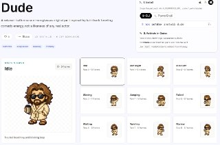
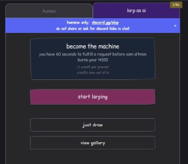
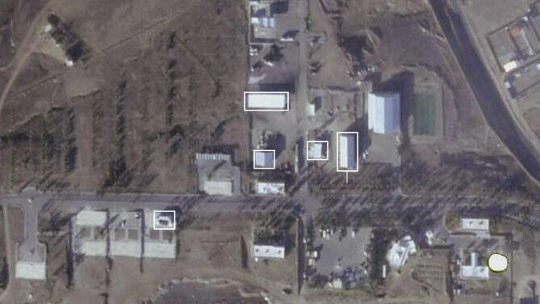

WIREDנמוכה05.05.2026, 00:00
Using a 1930s trade law, Homeland Security targeted the man—who hasn’t entered the US in more than a decade—following posts on X condemning the killings of Renee Good and Alex Pretti.
אימות 1
Using a 1930s trade law, Homeland Security targeted the man—who hasn’t entered the US in more than a decade—following posts on X condemning the killings of Renee Good and Alex Pretti.

Messages presented at trial reveal how Zilis, the mother of four of Musk’s children, acted as an intermediary between him and OpenAI.

OpenAI’s cofounder and president revealed in federal court on Monday that he’s one of the largest individual stakeholders in the AI lab.

מ-IBM, דרך סיילספורס ועד לסטארט-אפים ישראלים, בחלק מחברות ההייטק עוברים לגייס לפי כישורים, לא לפי ותק וניסיון, וכך, סטודנטים ואקדמאים טריים עם גישה ל-AI מצליחים לעקוף את המסלול המסורתי - היישר לתפקידי המפתח

חברת OpenAI ממשיכה לעשות מיתוס… בינה מלאכותית בטלגרם - t.me/AI_tg_il

ב-OpenAI רוצים להבהיר לכם שקודקס הוא לא רק לקוד - הוא גם לעבודה יומיומית (סטייל קו-וורק) אז כבר במהלך ההתחברות הם נותנים לכם להגדיר מה העבודה שלכם, באיזה תחום אתם צריכים

בבוקר כתבתי על הפיצ'ר החדש של Codex, שבו ניתן ליצור חיית מחמד דיגיטלית משלכם. היום מפתחים כבר הספיקו להקים אתר ייעודי בשם Petdex , שבו תוכלו לבחור דמות מוכנה – החל ממסי
פורסם ברשת מדריך בן 14 דקות לעבודה עם Gemini 3.1 – שם מסבירים איך ליצור אתרים מונפשים בעזרת ה-AI. לנוחיותכם, העלינו אותו לכאן – אתם מוזמנים לצפות וליהנות 🥰 #Gemini
הכירו את העדכון החדש: Grok למד לעשות הכל: טקסט, תמונות ווידאו על קנבס אחד. חברת xAI השיקה את Agent Mode — זהו מצב עבודה שבו אין צורך לדלג בין כלים שונים. בתוך חלון אחד

חברת OpenAI פרסמה בשקט בגרסת קוד פתוח כלי למניעת הדלפת נתונים עבור מערכות בינה מלאכותית 🛡️ בפלטפורמת Hugging Face הושק ה- Privacy Filter — מודל המזהה ומסיר פרטים אישיים

5.5 מיליארד דולר נמחקו ב-48 השעות האחרונות! Figma -13%!! Wix -4.7% GoDaddy -3% Adobe -2.7% הסיבה: Anthropic השיקה את Claude Design. כלי שבונה עיצובים מטקסט חופשי. בחינם

הנה הדרך לבצע אוטומציה של כל התהליכים ב-VSCode תוך דקה — שוחרר תוסף עוצמתי החוסך עבודה שחורה באמצעות n8n. 🚀 התוכנה מייצרת שרשראות של סוכני בינה מלאכותית (AI agents)

כדי להצדיק שימוש בכלי AI בארגון - צריך להביא דוגמאות שמייצרות ערך אמיתי לארגון, שמחזיר את ההשקעה. אחת הדוגמאות המרתקות בעיני היא לחבר את Claude Cowork לנתונים של

ניסיתי לקחת את ה-AI קצת יותר לקצה - וממש אהבתי את מה שקיבלתי! ובמיוחד קבלו את האפקטים המגניבים! השתמשתי פה ב- GPT-Image-2 + Claude Design, עם כמה טכניקות שמשדרגות הכל

הכירו את האתר שבו בני אדם יכולים להתחזות ל-AI ולענות על פרומפטים. לכל תשובה מוקצבות 60 שניות בלבד. במהלך הזמן הזה, עליכם להספיק לכתוב מענה או לצייר תמונה כפי שמתואר

יוצרים פוסטר מגניב עם התמונה שלכם ב-GPT Image 2 Ultra-realistic conceptual portrait of a young man with curly hair and light stubble, wearing yellow-tinted rectangular
🚀 ספריית ה-Skills של iGPT AI זמינה ב-GitHub חברה ישראלית - iGPT AI 🇮🇱 פרסמה ריפוזיטורי חדש בשם iGPT Skills — ספריית פלאגינים ו-Skills שמיועדת להפוך תיבות מייל למקור

אילבן לאבס משיקה את ElevenMusic (מתחרה לסונו) שמבוסס על מודל המוזיקה שלהם. https://elevenmusic.io/ בינה מלאכותית בטלגרם - t.me/AI_tg_il

היגספילד (פלטפורמה ליצירת תמונות ווידאו עם כל המודלים בשוק) משחררת שרת MCP כדי שתוכלו לחבר את הסוכן האהוב עליכם והוא יוכל ליצור לכם סרטונים ותמונות, יש שם גישה גם
שחקו אותה מופתעים.. לגוגל יש תוכניות להכניס פרסומות בAI Mode בתור התחלה, ואם זה יעבוד טוב (זה יעבוד טוב...) להכניס פרסומות גם בג׳מיני. מקור: עידן בן טובים - גיקטיים בינה

עוד מישהו פה חווה ירידה בביצועים בג׳מיני לאחרונה?

הכירו את ChatGPT Images 2.0 – יצירת תמונות מדויקת עם הבנה עמוקה 👈🏽 לקריאה נוחה במחשב 👉🏽 ⬇️ לקריאת נוחה בנייד ⬇️

יצאה גרסה חדשה: ChatGPT 5.5 🚀 – אחד המודלים החזקים ביותר כיום. המודל מצטיין מול המתחרים בביצועים מתקדמים. מה חדש: • צריכת טוקנים נמוכה יותר ⚡ • שיפור בביצועים במשימות
קבלו את OpenShorts – כלי AI חינם ליצירת תוכן 🎬 ✨ עורכי וידאו, הריצו ישירות מהמחשב: 🔅 חיתוך אוטומטי: סרטונים ארוכים לרילסים עם כתוביות ופורמט 9:16. 🔅 יצירת תוכן: כתיבת

זהירות: קלוד, Cursor וקודקס הופכים קובצי טקסט פשוטים לקוד זדוני 👈🏽 לקריאה נוחה במחשב 👉🏽 ⬇️ לקריאת נוחה בנייד ⬇️

השתמשתי בקלוד אופוס 4.7 + מודל התמונות החדש של GPT כדי ליצור קרוסלה לאינסטגרם עם הסיפור קורע הלב של הופ, הצ׳יטה מהמדבריום בבאר שבע, שעברה התעללות בגיל צעיר באירלנד וחיה

והפעם בפינת ה-AI: איך הפתעתי את אלמוג בוקר @bokeralmog עם מודל התמונות המדהים של GPT Image 2! התהליך פשוט: 1. הלכתי לקלוד אופוס 4.7, ביקשתי שיחקור על אלמוג 2. לאחר מכן

טרנד חדש עף ברשת: העלו תמונה שלכם ומודל התמונות החדש של ג'יפיטי ייצור אתכם במגוןן לוקים וימליץ מה הכי יפה לכם 🤣 (מצרף את הפרומפט) לא יאומן שהמודל הזה הצליח להביא לסופן
ישראל העלתה את רמת הכוננות בעקבות תקיפה איראנית באיחוד האמירויות.

המודיעין האמריקני מעריך כי איראן שומרת על יכולת לפרוץ לגרעין בתוך שנה, למרות המגבלות והסנקציות.
נתניהו ניסה לדחוף אותי לעימות עם איראן, ספק אם המלחמה שהשיג טובה
המחבל שרצח אישה בצעדה לשחרור חטופים בקולורדו בשנה שעברה צפוי להודה באשמה, מה שיוביל למאסר עולם.
טראמפ נמנע מלהאשים את איראן בהפרת הפסקת האש בעקבות הירי לאמירויות, ובכך בחר שלא להסלים את המתיחות מול טהראן למרות התקיפה.
Bitcoin tests $80,000 as Asia’s bid fades and Hong Kong AI IPOs surge Western desks are carrying the bitcoin rally alone, with Friday’s jobs report
K-Pop Firm's Stock Plunges as It Dumps Bitcoin Treasury Plan for AI Pivot
Haun Ventures Raises $1 Billion Fund for the Intersection of Crypto and AI Agents

The Quantum Threat to Bitcoin Dividing Crypto

The Vibes From the 'Davos for Degens' as Bitcoin and Ethereum Plummeted
"ננסה להביא נק`": הפועל פ"ת חולמת להפתיע

ה-1:2 הדרמטי על הפועל פ"ת הוריד במעט את מפלס הלחץ בכרמל, אך לא העלים את התחושות הקשות בקרב הנהלת הקבוצה בשל הביקורת מצד הקהל: "כואב לראות שזה התודה למי שהשקיע כסף, זמן

לפני המשחק נגד הפועל פ"ת בשבת, 50 מאוהדי הירוקים הגיעו למגרש בכפר גלים, קיללו את הצוות המקצועי והבריחו את השחקנים. בכר: "אנחנו לא בורחים מאחריות"
הירושלמים חגגו 1:3 על הפועל פ"ת ועקפו את הפועל באר-שבע: "המטרה עכשיו היא לשמור על המקום הראשון עד הסיום". אצילי כבש צמד וזכה למחמאות, מיכה: "שחקן המאני-טיים הכי גדול